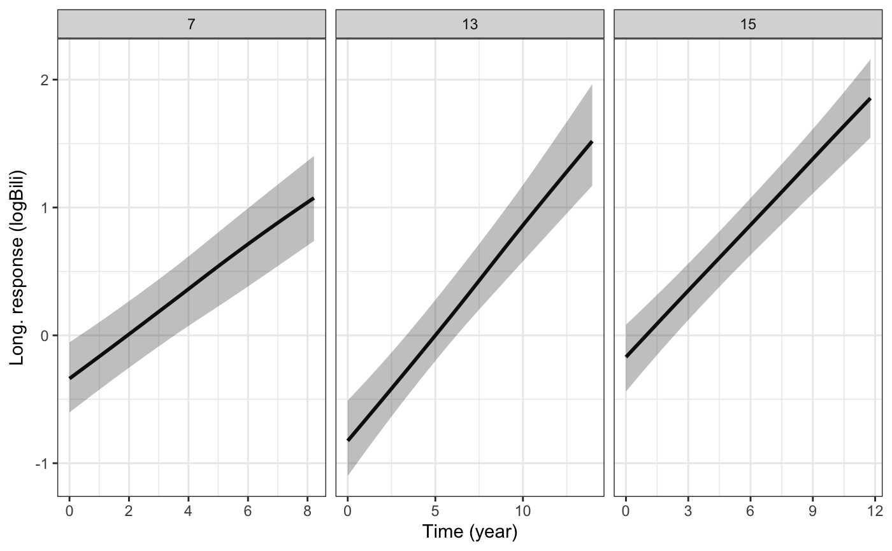
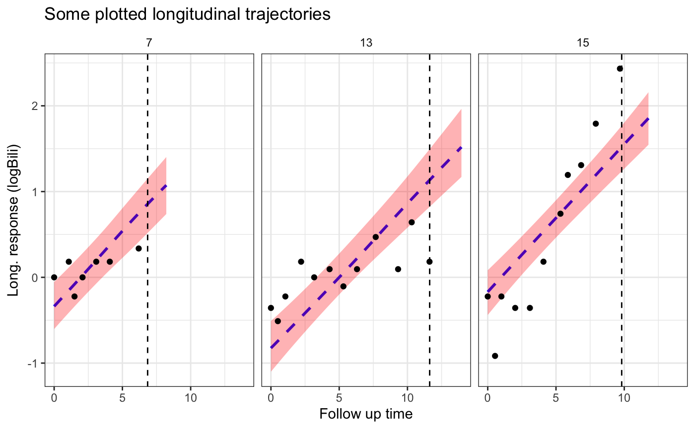

Plot the estimated subject-specific or marginal longitudinal trajectory
plot.predict.stanjm.RdThis generic plot method for predict.stanjm objects will
plot the estimated subject-specific or marginal longitudinal trajectory
using the data frame returned by a call to posterior_traj.
To ensure that enough data points are available to plot the longitudinal
trajectory, it is assumed that the call to posterior_traj
would have used the default interpolate = TRUE, and perhaps also
extrapolate = TRUE (the latter being optional, depending on
whether or not the user wants to see extrapolation of the longitudinal
trajectory beyond the last observation time).
# S3 method for predict.stanjm plot(x, ids = NULL, limits = c("ci", "pi", "none"), xlab = NULL, ylab = NULL, vline = FALSE, plot_observed = FALSE, facet_scales = "free_x", ci_geom_args = NULL, grp_overlay = FALSE, ...)
Arguments
| x | A data frame and object of class |
|---|---|
| ids | An optional vector providing a subset of subject IDs for whom the predicted curves should be plotted. |
| limits | A quoted character string specifying the type of limits to
include in the plot. Can be one of: |
| xlab, ylab | An optional axis label passed to
|
| vline | A logical. If |
| plot_observed | A logical. If |
| facet_scales | A character string passed to the |
| ci_geom_args | Optional arguments passed to
|
| grp_overlay | Only relevant if the model had lower level units
clustered within an individual. If |
| ... | Optional arguments passed to
|
Value
A ggplot object, also of class plot.predict.stanjm.
This object can be further customised using the ggplot2 package.
It can also be passed to the function plot_stack_jm.
See also
Examples
# \donttest{ # Run example model if not already loaded if (!exists("example_jm")) example(example_jm)#> #> exmpl_> set.seed(123) #> #> exmpl_> example_jm <- #> exmpl_+ stan_jm(formulaLong = logBili ~ year + (1 | id), #> exmpl_+ dataLong = pbcLong[1:101,], #> exmpl_+ formulaEvent = survival::Surv(futimeYears, death) ~ sex + trt, #> exmpl_+ dataEvent = pbcSurv[1:15,], #> exmpl_+ time_var = "year", #> exmpl_+ # this next line is only to keep the example small in size! #> exmpl_+ chains = 1, seed = 12345, iter = 200, refresh = 0) #> Fitting a univariate joint model. #> #> Please note the warmup may be much slower than later iterations!#> Warning: The largest R-hat is 1.09, indicating chains have not mixed. #> Running the chains for more iterations may help. See #> http://mc-stan.org/misc/warnings.html#r-hat#> Warning: Bulk Effective Samples Size (ESS) is too low, indicating posterior means and medians may be unreliable. #> Running the chains for more iterations may help. See #> http://mc-stan.org/misc/warnings.html#bulk-ess#> Warning: Tail Effective Samples Size (ESS) is too low, indicating posterior variances and tail quantiles may be unreliable. #> Running the chains for more iterations may help. See #> http://mc-stan.org/misc/warnings.html#tail-ess# For a subset of individuals in the estimation dataset we will # obtain subject-specific predictions for the longitudinal submodel # at evenly spaced times between 0 and their event or censoring time. pt1 <- posterior_traj(example_jm, ids = c(7,13,15), interpolate = TRUE) plot(pt1) # credible interval for mean response# We can also extrapolate the longitudinal trajectories. pt2 <- posterior_traj(example_jm, ids = c(7,13,15), interpolate = TRUE, extrapolate = TRUE) plot(pt2)# We can change or add attributes to the plot plot1 <- plot(pt2, ids = c(7,13,15), xlab = "Follow up time", vline = TRUE, plot_observed = TRUE, facet_scales = "fixed", color = "blue", linetype = 2, ci_geom_args = list(fill = "red")) plot1# Since the returned plot is also a ggplot object, we can # modify some of its attributes after it has been returned plot1 + ggplot2::theme(strip.background = ggplot2::element_blank()) + ggplot2::labs(title = "Some plotted longitudinal trajectories")# }